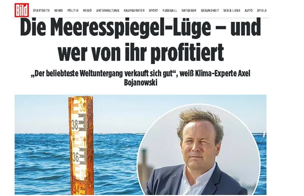

Towarzysze żurnałysty, odpowiedz jest prosta: WSZYSCY UMRĄ Z ZIMNA!
Bild to centrum niemieckiego głównego ścieku, to z tego tytułu wyziewa czad i zatruwa niemieckie umysły, w Polsce jego kalką jest Fakt. Dziennik dał artykuł z krzykliwym tytułem: "KŁAMSTWO O POZIOMIE MORZA – I KTO NA NIM KORZYSTA?"
Artykuł wymienia fundację, która żyje ze straszenia totalnym potopem, ale zaraz dodaje, że ludzkość jest przygotowana na zmiany klimatyczne. Nie ma w tym artykule nic nowego poza samym faktem, że klimatolog Axel Bojanowski, główny ekspert klimatyczny wielu agencji mówi o budowaniu przesadnego stanu zagrożenia zmianami klimatycznymi. Jest to dobrze znany kapłan carbofrustratów.

Nie jest prawdą, że prasa niemiecka zmienia narrację, ale ją zmiękcza. Zbiega się to oficjalną dyskusją miedzy USA i Niemcami o bezsensie tkwienia w ekologicznym szaleństwie. Nie jest tajemnicą, że Elon Musk, który prowadzi samodzielny, prawicowy projekt polityczny buduje w Europie lobby na rzecz zakończenia UE. Niemcy są obecnie pod wielką presją ekonomiczną. Zakończenie zielonego ładu w USA spowoduje, że gospodarka amerykańska gwałtownie stanie się znacznie bardziej konkurencyjna od Europejskiej. Niemcy po ciuchu już wracają do węgla i powoli zmieniają przekaz kierowany do swego zaczadzonego ludu. Niestety w Warszawie, prowincjonalna elitka czeka na hasło z Berlina w każdej sprawie, a co dopiero w sprawach kluczowych. Krytyczne wobec głodzenia Palestyńczyków wystąpienie Tuska miało miejsce 48 godzin po takim samym wstąpieniu niemieckiego kanclerza.
W polskojęzycznej prasie już padło pytanie pozostawione oczywiście bez odpowiedzi: "Co będzie jeśli Polaków nie będzie stać na zieloną energię?" Towarzyszu żurnałysto, odpowiedź jest prosta: Wszyscy umrą zimą z zimna !
Fot: Dziewczynka z zapałkami, adaptacja 2013
Paweł Klimczewski